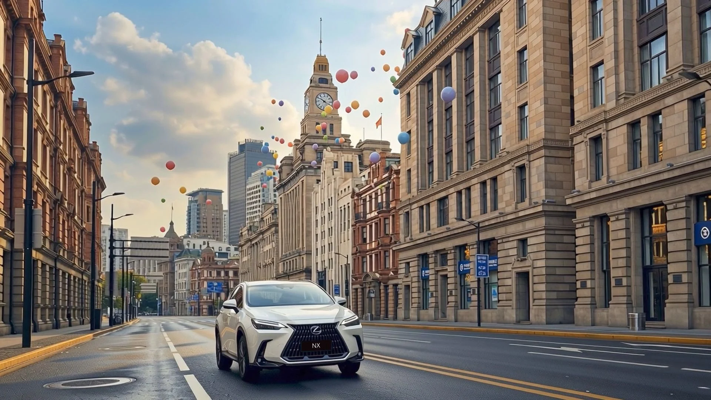

好故事
一起发生
从一顿饭的灵感 到一部影像的诞生
用成熟的制作方法 承接大胆的创作想象
EST 2020 BEIJING
YOUFAN STUDIO
有饭好好吃 北京 文化传媒有限公司
把生活里的温度
拍成看得见的故事
有饭传媒成立于 2020 年 以视觉叙事为核心 开展电影 广告及短剧内容制作 由导演 制片与后期团队协作 从创意策划 拍摄执行到后期交付 为品牌提供完整的影像制作服务
创始人师含磊毕业于北京电影学院 擅长人物情感表达与电影化叙事 我们也与不同领域的导演和创作者合作 为每个项目找到合适的表达方式
01
品牌与商业广告
TVC 品牌影片 汽车影像 时尚及快消内容 从品牌需求出发组织创意与制作
02
电影与人物叙事
剧情短片 人物纪录 电影节内容与音乐影像 在影像中保留真实的情绪
03
制作与后期协作
制片统筹 拍摄执行 剪辑与调色 协调各环节 把创意落到具体的画面
师含磊 导演 编剧 创始人 郝木 制片 监制
金大洋 剪辑 张艺 调色
浏览团队相关作品 金大洋 剪辑 张艺 调色

AI IMAGINATION FILM CRAFT
有梦 好好追
有梦好好追 AI 工作室 用影像对话品牌
用电影的思考
打开 AI 的想象
有梦好好追 AI 工作室专注 AI 广告与 AI 真人短剧 覆盖汽车 快消与时尚品类 提供全 AI 或 AI 与实拍结合的创作方式
师含磊负责导演与品牌叙事 联合创始人叶志祥深耕 AI 影像创作 并与三不五时工作室保持合作 将创意 分镜 关键帧与后期衔接 让新工具服务于故事本身
01
AI 广告片
全 AI AI 实拍混合制作 围绕品牌需求进行视觉探索与影片创作
02
AI 真人短剧
真人表演结合 AI 场景 开展品牌植入短剧与社交平台内容制作
03
品牌影像策划
创意策划 脚本分镜 关键帧与影像生成 从视觉方向到完整内容
01创意策划
02脚本分镜
03关键帧确认
04AI 视频生成
05精剪交付
师含磊 创始人 导演 叶志祥 联合创始人 AI 影像导演
团队创作经历 叶志祥所在的 AI 穿拖鞋工作室 以短片 当归 获第十五届北京国际电影节 AIGC 单元社会组优秀影片 资料来源 工作室简介
浏览 AI 作品 团队创作经历 叶志祥所在的 AI 穿拖鞋工作室 以短片 当归 获第十五届北京国际电影节 AIGC 单元社会组优秀影片 资料来源 工作室简介
CREATORS 公司合伙人与常合作伙伴不同视角
不同视角
共同创作
导演 摄影 制片与视觉创作 按项目协作
公司合伙人与常合作伙伴按项目协作 具体作品与职责见各自资料